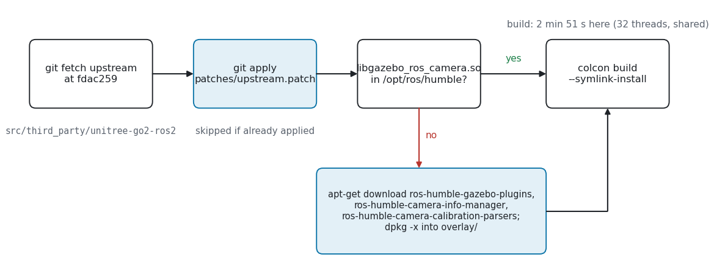
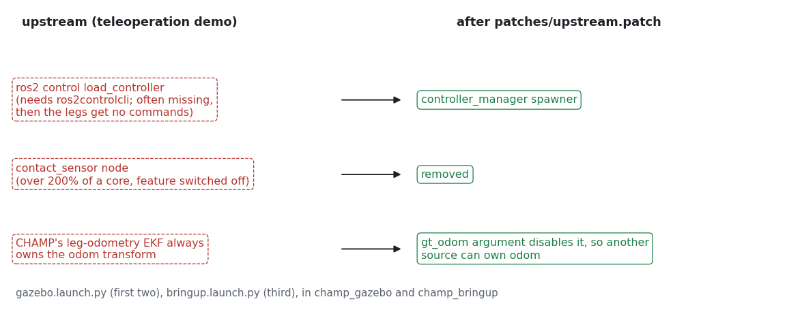
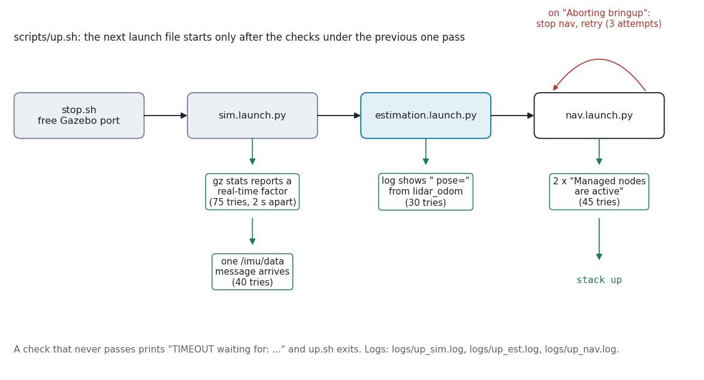
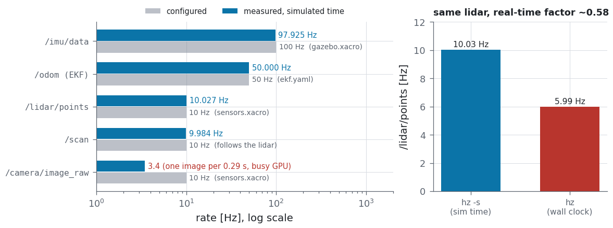
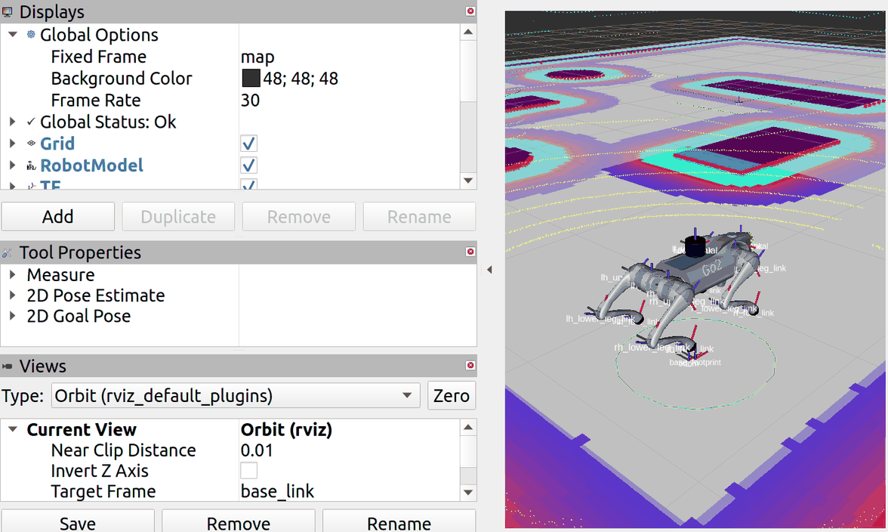
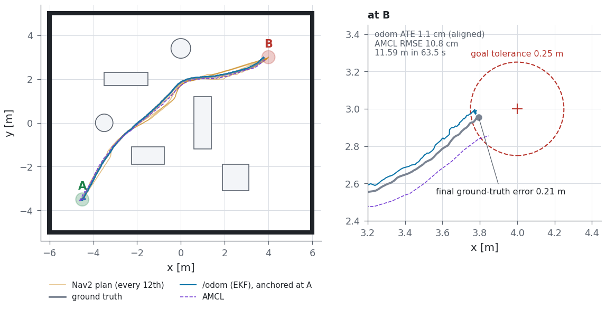
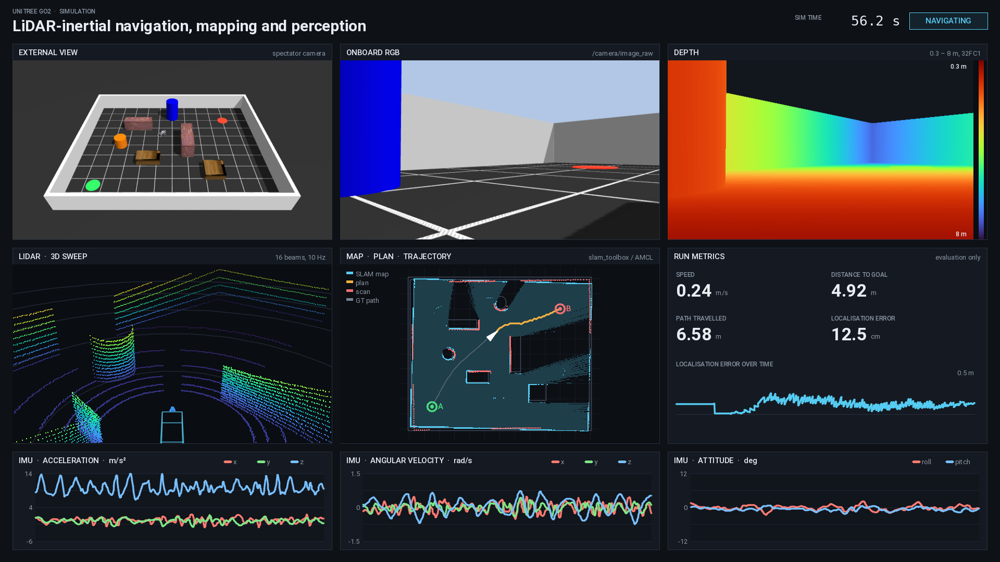

Start · Chapter 3
Install and first run
| Goal | The workspace built, the full stack running with every check passed, and one mission from A to B read and scored. |
| Time | 1.5 h. Chapters 2 and 3 together: 2 h. |
| Before you start | Chapter 2 done: every package in its version check is installed, natively or in the dev container. The clone from chapter 0, task 1.1. |
| You will learn | what setup.sh changes in the upstream code; how up.sh decides the stack is ready; how to check rates in simulated time; how to read the result line of a mission and score the run against ground truth. |
Task 1: Build the workspace
1.1 Run setup.sh
Objective: fetch the pinned upstream code, patch it and build everything.
Work in the clone you made in chapter 0, task 1.1. If you skipped that chapter, clone first with
git clone https://github.com/Armanasq/go2-nav-sim.git in the directory that should hold the repository.
cd go2-nav-sim
scripts/setup.sh
patch applied
plugins unpacked into overlay/
Starting >>> champ
...
Finished <<< champ_base [2min 1s]
Starting >>> champ_bringup
Finished <<< champ_bringup [3.28s]
Starting >>> go2_nav_sim
Finished <<< go2_nav_sim [1.67s]
Summary: 13 packages finished [2min 48s]
done. next: source env.sh && scripts/up.sh
The build took 2 min 51 s of wall time on a 32-thread machine that was running other simulations at the same time; the download
of the upstream repository comes on top. setup.sh does three things:
- Fetches anujjain-dev/unitree-go2-ros2 (Go2 description and CHAMP gait
controller for Humble) at commit
fdac259intosrc/third_party/and appliespatches/upstream.patch. - Unpacks the Gazebo sensor plugins into
overlay/if/opt/ros/humble/lib/libgazebo_ros_camera.sois missing. On a machine that has them, the second line of the output is absent. - Runs
colcon build --symlink-install.
source env.sh
ros2 pkg prefix go2_nav_sim
Check: the last command prints <repository>/install/go2_nav_sim.
Common mistakes: running setup.sh a second time prints patch already applied; that is expected. A build that stops with
No module named 'em' has a virtualenv on PATH (chapter 2, task 3.2).

scripts/setup.sh as a flowchart; the plugin branch runs only when /opt/ros/humble/lib/libgazebo_ros_camera.so is missing.
1.2 Read what the patch changes
Objective: know which upstream lines this stack depends on.
git -C src/third_party/unitree-go2-ros2 diff --stat
champ/champ_bringup/launch/bringup.launch.py | 10 +++++++++-
champ/champ_gazebo/launch/gazebo.launch.py | 14 +++-----------
2 files changed, 12 insertions(+), 12 deletions(-)
Upstream targets a teleoperation demo. Three things had to change for this stack:
champ_gazebo/launch/gazebo.launch.pyloaded controllers withros2 control load_controller. That command comes fromros2controlcli, which is often not installed, and without it the legs never receive commands. The patch uses thecontroller_managerspawner instead.- The same file started a
contact_sensornode that used over 200% of a core for a feature that is switched off. Removed. champ_bringup/launch/bringup.launch.pygets agt_odomargument that disables CHAMP's leg-odometry EKF, so another source can own theodomtransform.
Check: two files changed, both launch files.

The three changes in patches/upstream.patch, upstream behaviour on the left.
Task 2: Start the stack and check it
2.1 Run up.sh
Objective: start simulator, estimation and navigation in order, each only after the previous one is ready.
source env.sh
scripts/up.sh
stack: ROS_DOMAIN_ID=42 GAZEBO_MASTER_URI=http://localhost:11345
stack up
It printed stack up after 40 s here. up.sh starts three launch files and waits for each:
| Step | Launch file | Provides |
|---|---|---|
| 1 | sim.launch.py |
Gazebo arena, Go2 with CHAMP, lidar, RGB-D camera, IMU, ground-truth pose |
| 2 | estimation.launch.py |
/scan, lidar odometry, EKF, the odom to base_footprint transform |
| 3 | nav.launch.py |
Nav2, AMCL on the arena map, a passive slam_toolbox |
Check: the last line is stack up. The launch output is in logs/up_sim.log, logs/up_est.log and logs/up_nav.log.
The first readiness check runs gz stats -w arena -d 1. Without -w arena, gz stats reads the first world the Gazebo master
lists. An earlier version of up.sh left out -w arena; on one run the first world listed was default, gz stats printed
nothing, and up.sh stopped with TIMEOUT waiting for: gazebo after 288 s while gzserver was running. Run the check yourself:
gz stats -w arena -d 2
Factor[0.76] SimTime[258.62] RealTime[348.07] Paused[F]
Factor is the real-time factor; 0.76 means one simulated second took 1.3 s. If up.sh still stops with
TIMEOUT waiting for: gazebo while this command prints Factor lines, the machine is too busy to answer within the 5 s
timeout of the check; the troubleshooting table of p01 has the way around it.

The readiness checks in scripts/up.sh. Each check is retried the number of times shown, 2 s apart; only the Nav2 step is restarted on failure.
2.2 Check the sensor rates
Objective: confirm each sensor publishes at its configured rate.
ros2 topic hz -s /lidar/points
ros2 topic hz -s /imu/data
ros2 topic hz -s /scan
ros2 topic hz -s /odom
Stop each with Ctrl-C after a few lines. The last line of each:
average rate: 10.027
average rate: 97.925
average rate: 9.984
average rate: 50.000
Check: about 10 Hz for the lidar and /scan, about 100 Hz for the IMU, 50 Hz for the EKF's /odom. The camera,
/camera/image_raw, is set to 10 Hz in sensors.xacro; it is the first sensor to drop frames on a busy machine. With other
simulations running on the same GPU it delivered one image every 0.29 s of simulated time on average.
Common mistakes: without -s, ros2 topic hz measures in wall-clock time, so every rate is multiplied by the real-time factor.
At a factor of about 0.58 the lidar showed 5.99 Hz instead of 10.03 Hz. Every rate and time in this course is in simulated time.

Measured rates from the outputs above against the configured ones in gazebo.xacro (IMU), ekf.yaml and sensors.xacro. The camera is the one topic far below its setting.
2.3 Check that the robot is localised
Objective: see a transform from the map to the robot, which needs Gazebo, the EKF and AMCL all running.
ros2 run tf2_ros tf2_echo map base_footprint
[INFO] [...] [tf2_echo]: Waiting for transform map -> base_footprint: Invalid frame ID "map" passed to canTransform argument target_frame - frame does not exist
At time 57.276000000
- Translation: [-4.504, -3.446, 0.000]
- Rotation: in Quaternion (xyzw) [0.000, 0.000, -0.008, 1.000]
Check: the translation is close to A at (-4.5, -3.5). The first Waiting for transform line is normal for a second or two; if it
repeats, AMCL has not received an initial pose.
2.4 Look at it in RViz
Objective: see the robot, the map, the costmaps and the scan in one window.
rviz2 -d src/go2_nav_sim/rviz/go2.rviz --ros-args -p use_sim_time:=true

RViz with src/go2_nav_sim/rviz/go2.rviz, taken from the stack started in 2.1: the robot at A with its footprint, the scan, and the inflated obstacles of the costmaps.
Check: Global Status: Ok and the robot model standing on the map. p01 explains each
display. Gazebo itself runs without a window; to see it, launch sim.launch.py headless:=False yourself instead of up.sh.
Task 3: Run the first mission
3.1 Run run_mission.sh
Objective: drive from A to B with Nav2 while recording a rosbag.
scripts/run_mission.sh bags/first; echo "exit code $?"
run_mission.sh restarts the stack with up.sh, starts record_bag.sh, runs go_to_goal.py and stops the recording. It
stops only its own recorder: setsid makes the recorder the leader of a new process group, and the script sends Ctrl-C (SIGINT)
to that group and waits until the bag is closed. A recorder of another stack on the same machine keeps running. The output,
with most progress lines left out:
stack: ROS_DOMAIN_ID=42 GAZEBO_MASTER_URI=http://localhost:11345
stack up
[INFO] [...] [basic_navigator]: goal -> (4.00, 3.00, yaw 0.65)
[INFO] [...] [basic_navigator]: Navigating to goal: 4.0 3.0...
[INFO] [...] [basic_navigator]: distance remaining 11.31 m, recoveries 0
...
[INFO] [...] [basic_navigator]: distance remaining 3.97 m, recoveries 1
...
[INFO] [...] [basic_navigator]: distance remaining 0.57 m, recoveries 1
RESULT SUCCEEDED sim_time 54.2 s ground-truth final error 0.32 m final pos (3.68, 2.97)
exit code 0
It took 161 s of wall time at a real-time factor of about 0.55. The robot starts on the green disc A and walks to the red disc B at (4.0, 3.0).
Check: the last two lines are RESULT SUCCEEDED ... and exit code 0.
3.2 Read the result line
Objective: know what each field measures and who measured it.
| Field | Value above | Source |
|---|---|---|
SUCCEEDED |
Nav2's result. It means Nav2's own estimate of the robot was inside xy_goal_tolerance (0.25 m), not that the real robot was. Other values: FAILED, CANCELED. |
|
sim_time |
54.2 s | simulated time from sending the goal to the result |
ground-truth final error |
0.32 m | distance from B to the true final position on /odom_gt |
final pos |
(3.68, 2.97) | the true final position, in map coordinates |
The same line is in logs/mission.log. Recorded runs on the test machine took 54.4, 54.8 and 83.1 s; yours will vary from run
to run.
Check: you can say whether your run stopped inside the 0.25 m tolerance according to ground truth.

A recorded run to the same goal (run w2, site/data/runs/w2/run.json and results/run_w2.json): it stopped 0.21 m from B, inside the 0.25 m tolerance.
The last 15 s of the dashboard video (media/go2_a2b_dashboard.mp4 from 1:28): the status changes from NAVIGATING to ARRIVED, then the summary card.
3.3 Score the run
Objective: compute the odometry and AMCL errors of your run from its bag.
python3 src/go2_nav_sim/scripts/bag_metrics.py bags/first
{
"duration_s": 62.1,
"path_m": 11.56,
"mean_speed_ms": 0.186,
"odom_ate_aligned_cm": 1.6,
"odom_ate_anchored_cm": 1.8,
"odom_final_err_cm": 4.5,
"odom_drift_pct": 0.39,
"odom_rpe_1m_pct": 1.94,
"amcl_rmse_cm": 11.7,
"amcl_max_cm": 18.1,
"amcl_updates": 168,
"goal_error_m": 0.32,
"goal_tolerance_m": 0.25
}
Check: goal_error_m agrees with the ground-truth final error of the result line to within 0.01 m. Both come from /odom_gt,
but go_to_goal.py reads it when Nav2 reports the result and bag_metrics.py takes the last pose in the bag, which ends at
least 4 s later. In a second run they were 0.26 m and 0.25 m.
The bag was 639 MiB (ros2 bag info bags/first): 5.7 MiB per wall-clock second over 112 s, or 10.3 MiB per simulated second
over the 62.1 s of duration_s. Chapter 11 explains each number and renders the dashboard video
from the same bag.

One frame of the dashboard that render_dashboard.py makes from a bag. The run metrics panel is evaluation only.
Task 4: Stop the stack
4.1 Run stop.sh
Objective: leave no simulator running in the background.
scripts/stop.sh
ros2 node list --no-daemon
Check: ros2 node list prints nothing. stop.sh stops only processes in your ROS_DOMAIN_ID. CHAMP keeps walking on the last
/cmd_vel it received, so stopping the stack is also the way out when a robot walks off with no one commanding it.
Exercise
The run in 3.1 reported SUCCEEDED, yet the robot stopped 0.32 m from B, outside the 0.25 m tolerance. Use the output of 3.3 to
explain how both can be true.
Answer: Nav2 checks the tolerance against its own pose estimate, which comes from AMCL on top of the odometry. The odometry was
good (odom_ate_aligned_cm 1.6), but AMCL was off by 11.7 cm RMSE and up to 18.1 cm (amcl_rmse_cm, amcl_max_cm). An AMCL
error of about 0.1 m in the direction of B is enough to move a stop that Nav2 sees inside 0.25 m to 0.32 m from B in reality.
Localisation, not odometry, limits how close to B the robot stops.

The same effect in the recorded runs (site/data/runs/wN/run.json): in w3 the last /amcl_pose was 0.23 m from B and the robot 0.34 m.
Further reading
- Gazebo, "Installing Gazebo with ROS": https://gazebosim.org/docs/latest/ros_installation/
unitreerobotics/unitree_ros2,.devcontainer/: how the Go2's own ROS 2 package sets up its build environment in a container.
Source: docs/03-install-and-first-run.md